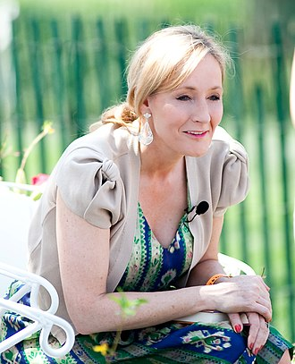

|  |
Joanne Rowling [ d͡ʒoʊˈæn ˈroʊlɪŋ]a, plus connue sous les noms de plume J. K. Rowlingb et
Robert
Galbraith, est une
romancière et scénariste britannique née le 31 juillet 1965 dans l’agglomération de Yate
(Gloucestershire du Sud).
Elle doit sa notoriété mondiale à la série Harry Potter, dont les romans traduits
en près de quatre-vingts langues ont été vendus à plus de 500 millions d'exemplaires dans le
monde.
Issue d’une famille modeste, elle a écrit sa première « histoire » à l'âge de six ans. Après des études à l'université d'Exeter ainsi qu'à la Sorbonne où elle a obtenu un diplôme en littérature française et en philologie, elle a travaillé un temps au sein d'Amnesty International, puis a enseigné l'anglais et le français. C'est à vingt-cinq ans qu'elle a bâti les premiers concepts et institutions de son univers sorcier, dans lequel un enfant orphelin découvrait à la fois son héritage tragique et ses talents de magicien. Elle a rédigé son premier roman, L'École des sorciers, dans un contexte de précarité et de dépression et a dû attendre plus d'un an avant sa publication en 1997 chez Bloomsbury. |